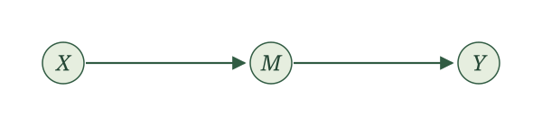
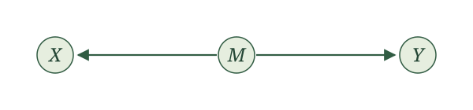
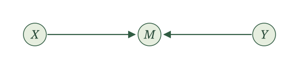

D-separation
Introduction
A causal graph records how random variables come about. We now ask what that structure tells us about association: when can learning one variable change what we know about another, and when does conditioning stop—or create—that flow of information?
We begin with the smallest graphical building blocks. Then we string them into paths and develop d-separation, the graphical rule that lets us read conditional-independence statements from a causal graph.
Chains, forks, and colliders
We now have a convenient picture of who generates whom. What can that picture tell us about which variables share information?
Start small. An edge, a chain, a fork, and a collider are the building blocks we will use. For now, each drawing is the entire graph for its example. There are no additional paths hiding outside the picture. Whenever we say a structure can transmit association, we mean that it permits dependence between its endpoints. We are not saying that every choice of functions and noise distributions must produce dependence.
An edge can transmit association.
If \(Y\) uses \(X\) in its assignment, learning \(X\) can tell us something about \(Y\). For a concrete example, let the noise terms be independent fair coin flips, represented by \(\operatorname{Bernoulli}(1/2)\) variables, and write
\[ X\leftarrow\epsilon_X,\qquad Y\leftarrow X+\epsilon_Y. \]
If we learn that \(Y=0\), we know \(X=0\). Before learning \(Y\), either value of \(X\) was equally likely. The two random variables share information.
A chain can transmit association through an intermediate variable.

Think of a reminder affecting attendance, which affects whether a measurement is collected. In a simplified story with just these three variables, information can travel from the reminder through attendance to measurement. A concrete SCM with this graph is
\[ X\leftarrow\epsilon_X,\qquad M\leftarrow X+\epsilon_M,\qquad Y\leftarrow M+\epsilon_Y, \]
again with independent fair-coin noise terms. This numerical example illustrates the graph; its sums are not binary attendance indicators. Learning that \(Y=0\) tells us that every term in the sum was zero, including \(X\).
What happens if we already know \(M\)? The assignment for \(Y\) uses \(M\) and fresh independent noise. Once \(M\) is known, learning \(X\) gives us no extra information about \(Y\):
\[ X\mathrel{\perp\!\!\!\perp}Y\mid M. \]
A fork can transmit association through a shared parent.

For example, illness severity might affect both a treatment decision and an outcome. The treatment and outcome can share information because both use severity. Consider
\[ M\leftarrow\epsilon_M,\qquad X\leftarrow M+\epsilon_X,\qquad Y\leftarrow M+\epsilon_Y, \]
with independent fair-coin noise terms. If \(Y=0\), then \(M=0\), which makes \(X=0\) more likely than it was before we learned \(Y\). Association can travel along a path even when its arrows do not all point in the direction we are traveling.
If we already know \(M\), however, the remaining randomness in \(X\) and \(Y\) is independent. Once again,
\[ X\mathrel{\perp\!\!\!\perp}Y\mid M. \]
In the fair-coin fork example, find \(P(X=0)\) and \(P(X=0\mid Y=0)\). What changes if we already know \(M=0\)?
For \(X=0\), both \(M\) and \(\epsilon_X\) must be zero, so \(P(X=0)=1/4\). Learning \(Y=0\) tells us \(M=0\), leaving only the independent coin flip \(\epsilon_X\), so \(P(X=0\mid Y=0)=1/2\).
If we already know \(M=0\), then \(P(X=0\mid M=0)=1/2\). Learning \(Y=0\) in addition does not change this probability. More generally, the conditional independence holds for either value of \(M\).
A collider behaves differently.

The arrows collide at \(M\). Here the endpoints are generated from separate independent noise terms. Their shared child does not by itself make them associated:
\[ X\mathrel{\perp\!\!\!\perp}Y. \]
But learning the child’s value can change things. Imagine that two independent sources contribute to a total. If we learn the total and then learn that one contribution was large, we have learned something about how large the other contribution could have been.
For a concrete example, write
\[ X\leftarrow\epsilon_X,\qquad Y\leftarrow\epsilon_Y,\qquad M\leftarrow X+Y+\epsilon_M, \]
with independent fair-coin noise terms. Before learning \(M\), \(X\) and \(Y\) are independent. Among cases with \(M=1\), however, learning \(Y=1\) forces \(X=0\). Knowing the total makes the two contributions informative about each other. This is an example of collider bias.
In the collider example, suppose \(M=1\). What are the possible values of \((X,Y,\epsilon_M)\)? Find \(P(X=0\mid M=1)\) and \(P(X=0\mid M=1,Y=1)\).
The possibilities are \((1,0,0)\), \((0,1,0)\), and \((0,0,1)\), each equally likely. Thus,
\[ P(X=0\mid M=1)=\frac23. \]
If we also know \(Y=1\), only \((0,1,0)\) remains, so
\[ P(X=0\mid M=1,Y=1)=1. \]
Learning \(Y\) changes what we know about \(X\) once we condition on \(M\).
Chains and forks can transmit association; conditioning on the middle variable blocks that path. A collider blocks the path until we condition on the collider or, potentially, learn about it through one of its descendants.
| Structure | Without conditioning | Conditioning on the middle variable |
|---|---|---|
| Chain: \(X\to M\to Y\) | \(X\) and \(Y\) can be associated | \(X\perp\!\!\!\perp Y\mid M\) |
| Fork: \(X\leftarrow M\to Y\) | \(X\) and \(Y\) can be associated | \(X\perp\!\!\!\perp Y\mid M\) |
| Collider: \(X\to M\leftarrow Y\) | \(X\perp\!\!\!\perp Y\) | \(X\) and \(Y\) can be associated |
The table concerns each isolated three-variable graph. In a larger graph, another path might still connect the endpoints. We will need to consider all paths before concluding that two variables are independent.
For the chain, write \(X=f_X(\epsilon_X)\), \(M=f_M(X,\epsilon_M)\), and \(Y=f_Y(M,\epsilon_Y)\). Independence of the noise terms makes \(\epsilon_Y\) independent of \((X,M)\). For a bounded measurable function \(g\), define \(h(m)=E[g(f_Y(m,\epsilon_Y))]\). Then
\[ E[g(Y)\mid X,M]=h(M)=E[g(Y)\mid M], \]
which gives \(Y\perp\!\!\!\perp X\mid M\).
For the fork, \(M=f_M(\epsilon_M)\), \(X=f_X(M,\epsilon_X)\), and \(Y=f_Y(M,\epsilon_Y)\). Conditional on \(M\), the noise terms \(\epsilon_X\) and \(\epsilon_Y\) remain independent with their original distributions. Thus the conditional joint distribution of \(X,Y\) factors into their conditional marginal distributions, giving \(X\perp\!\!\!\perp Y\mid M\).
For the collider, \(X=f_X(\epsilon_X)\) and \(Y=f_Y(\epsilon_Y)\) are functions of independent noise terms, so \(X\perp\!\!\!\perp Y\). Conditioning on their shared child does not preserve this argument. The fair-coin example in the text demonstrates that conditional dependence is possible.
Suppose independent preparation \(P\) and independent exam-day luck \(L\) both contribute to a score \(Y\), with graph \(P\to Y\leftarrow L\). Can preparation and luck become associated among students with the same score? How is this different from conditioning on the middle of a chain?
Yes. Score is a collider. Among students with a fixed score, learning that one student had especially good luck may change what we infer about that student’s preparation. The graph permits this association; a particular model determines whether and how it occurs. Conditioning on the middle of an isolated chain instead blocks the path between its endpoints.
From building blocks to paths
Chains, forks, and colliders become useful when several of them are strung together. To study whether two variables can share information, we trace every path between their nodes.
A path is a sequence of distinct nodes connected by edges. We may travel along an edge in either direction. A directed path is more restrictive: every arrow must point in the direction we travel.
For example,
\[ X o M o Y \]
is a directed path from \(X\) to \(Y\). The same edges also form a path from \(Y\) to \(X\), but not a directed path in that direction. A path need not be directed to transmit association. The fork \(Xleftarrow M o Y\) already showed us why.
A longer path is made from the same three building blocks. At every node between its endpoints, look only at the two arrows belonging to that path:
- If the arrows meet head-to-tail, the node is in a chain.
- If both arrows leave the node, the node is in a fork.
- If both arrows point into the node, the node is a collider.
Whether the entire path is open depends on these middle nodes and on which variables we condition on.
Blocked and open paths. A path is blocked by a collection of variables \(Z\) if it contains at least one of the following:
- a chain or fork whose middle node is in \(Z\); or
- a collider such that neither the collider nor any of its descendants is in \(Z\).
If neither condition occurs, the path is open given \(Z\).
This definition collects what we learned from the three-variable structures. Conditioning on the middle of a chain or fork blocks the path. A collider blocks the path by default, but conditioning on the collider opens it. Conditioning on a descendant of the collider can also reveal information about the collider and open the path.
When we condition on nothing, take \(Z= arnothing\). Chains and forks remain open, while every collider blocks its path.
For each three-variable structure, is the path from \(X\) to \(Y\) open without conditioning? Is it open after conditioning on \(M\)?
For the chain \(X o M o Y\) and the fork \(Xleftarrow M o Y\), the path is open without conditioning and blocked after conditioning on \(M\).
For the collider \(X o Mleftarrow Y\), the path is blocked without conditioning and open after conditioning on \(M\).
One blocked path is not enough when the graph contains several paths. Information may still travel along another open route. We therefore need a statement about every path between two nodes.
d-separation. Two collections of nodes \(X\) and \(Y\) are d-separated by a collection \(Z\) if every path from a node in \(X\) to a node in \(Y\) is blocked by \(Z\). Otherwise, \(X\) and \(Y\) are d-connected given \(Z\).
The letter d reminds us that the directions of the arrows determine whether a middle node is a chain, fork, or collider. We may write
\[ (Xmathrel{perp!!!perp_d}Ymid Z)_G \]
to say that \(X\) and \(Y\) are d-separated by \(Z\) in graph \(G\). The subscript \(G\) matters: d-separation is a statement about a graph, while ordinary conditional independence is a statement about random variables.
Return to the graph in Figure 5.
There are two paths between \(W\) and \(A\):
\[ W\leftarrow X\to A \]
and
\[ W\to Y\leftarrow A. \]
Without conditioning, the first path is open because \(X\) is the middle of a fork. The second path is blocked because \(Y\) is a collider. Because at least one path is open, \(W\) and \(A\) are d-connected.
Now condition on \(X\). This blocks the fork. The path through \(Y\) remains blocked by its collider. Every path is now blocked, so \(W\) and \(A\) are d-separated by \(X\).
What happens if we condition on both \(X\) and \(Y\)? Are \(W\) and \(A\) d-separated?
No. Conditioning on \(X\) blocks the fork \(W\leftarrow X\to A\), but conditioning on the collider \(Y\) opens the path \(W\to Y\leftarrow A\). Because one path remains open, \(W\) and \(A\) are d-connected given \(X\) and \(Y\).
From d-separation to independence
D-separation is powerful because it turns a graphical statement into a statement about random variables.
Global Markov property. If \(X\) and \(Y\) are d-separated by \(Z\) in the causal graph of an SCM, then the corresponding random variables are conditionally independent:
\[ (Xmathrel{perp!!!perp_d}Ymid Z)_G quadLongrightarrowquad Xmathrel{perp!!!perp}Ymid Z. \]
The implication goes in one direction. If the graph says the paths are blocked, the SCM guarantees conditional independence. If two variables happen to be independent because particular effects cancel or an assignment ignores one of its displayed inputs, the graph need not reveal that extra independence.
A full proof requires more probability and graph machinery than we need here. One route uses the factorization of the joint distribution implied by the SCM and shows that d-separation entails the corresponding conditional-independence factorization. This result is commonly called the global Markov property for directed acyclic graphs.
The local Markov property from the previous section is a special case. The general result allows us to inspect every path between arbitrary collections of nodes rather than considering only one variable, its parents, and its nondescendants.
The practical recipe is:
- List every path between the variables of interest.
- On each path, identify chains, forks, and colliders.
- Check whether the conditioning variables block or open that path.
- Conclude d-separation only if every path is blocked.
- Use the global Markov property to translate d-separation into conditional independence.
This recipe lets us move from a potentially complicated picture to a precise statement about the random variables represented by its nodes.